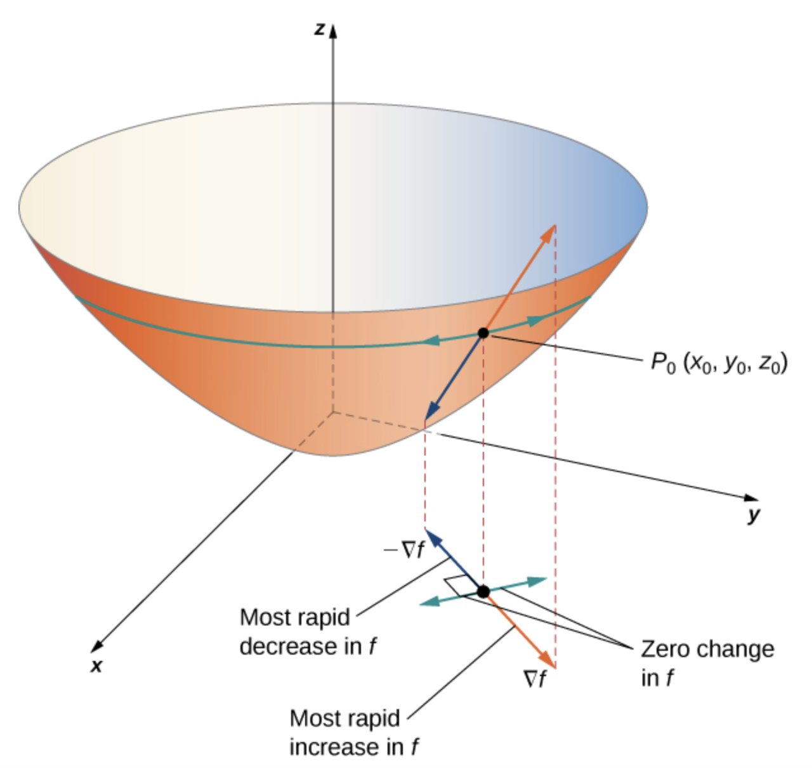
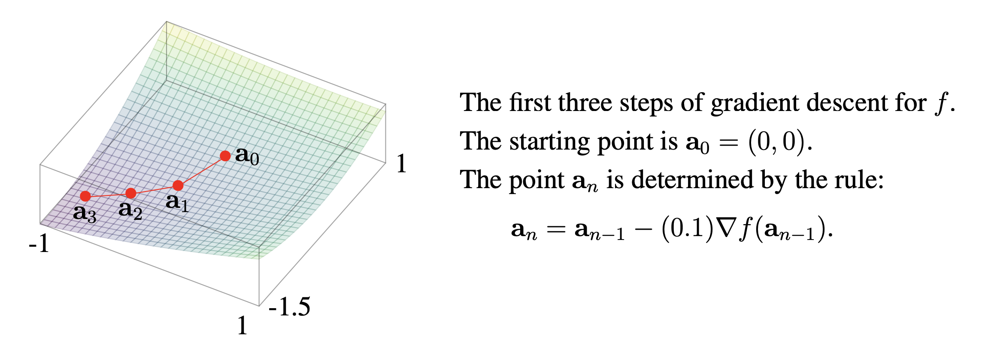

So the critical points of \(f\) are the solutions to the system of equations
We calculate that
\text{,},
that
and that
\text{.}.
So the critical points of are the solutions to the system of equations
.
.
Using the calculus we have developed, it is relatively simple given an expression defining a function to find a system of equations that defines the critical points of the equation. But as we see in the solution to Activity 9.3.1, this system of equations, involving exponentials and trigonometric equations, may be impossible to solve analytically (unlike the systems of linear equations we studied earlier on this course, whose solutions we could always find exactly using the Gaussian elimination algorithm).
For systems of equations that cannot be solved analytically, numerical methods such as the method of gradient descent can be used to approximate the coordinates of critical points. Starting from an initial guess \(\mathbf{x} = (x_0,y_0,z_0)\text{,}\) the method of gradient descent generates a sequence of points that converge toward a critical point. The method involves by substracting \(\mathbf{x}\) by a suitable multiple of \(\nabla f(\mathbf{x})\) (the multiple used being called the step size). In this section we explain why this method should converge to a critical point.
To discuss this further, we must introduce more general kinds of derivatives. Recall that the partial derivatives of a function \(f\) are defined as
By replacing \(\mathbf{e}_i\) by a more general unit vector, we obtain the concept of a directional derivative.
Definition9.3.1.
Let \(f\) be a scalar-valued function. Then if \(\mathbf{v}\) is a unit vector, the directional derivative of \(f\) in the direction of the vector \(\mathbf{v}\text{,}\) denoted \(D_{\mathbf{v}} f\text{,}\) is defined as
The directional derivative represents the rate of change of the function \(f\) at the point \(\mathbf{a}\) in the direction of the unit vector \(\mathbf{v}\text{.}\) For a function \(f(x,y)\) of two variables, the directional derivative \(D_\mathbf{v} f (\mathbf{a})\) is the slope of the tangent line to the curve obtained by intersecting the surface \(z = f(x,y)\) with the plane containing both the line passing through \(\mathbf{a}\) with direction vector \(\mathbf{v}\text{,}\) and the \(z\) axis.
Remark9.3.2.
Partial derivatives are a special case of directional derivatives, i.e. we have
Despite partial derivatives being a special case of directional derivatives, in most circumstances we can compute directional derivatives using partial derivatives, or equivalently, the gradient.
Theorem9.3.3.
Suppose \(f\) is a function differentiable at a point \(\mathbf{a}\text{.}\) Then for each unit vector \(\mathbf{v}\text{,}\)\(D_{\mathbf{v}} f(\mathbf{a}) = \nabla f(\mathbf{a}) \cdot \mathbf{v}\text{.}\)
Proof.
We apply the chain rule. We note that \(D_{\mathbf{v}} f(\mathbf{a})\) is equal to the derivative of the function \(g(t) = f(\mathbf{a} + t \mathbf{v})\) at \(t = 0\) (both derivatives are defined as the same limits). If we write \(\mathbf{c}(t) = \mathbf{a} + t \mathbf{v}\text{,}\) then \(g = f \circ \mathbf{c}\text{.}\) But the chain rule (Theorem 8.3.5) implies that
Find the directional derivative of \(f\) at the point \((-1,3)\) in the direction of the vector \((-1,\sqrt{3})\text{.}\) That is, compute \(D_{\mathbf{v}} f(-1,3)\text{,}\) where \(\mathbf{v}\) is the unit vector in the direction of \((-1,\sqrt{3})\text{.}\)
Use the gradient of the function \(f(x,y) = x^3y\) to find the directional derivative of \(f\) at \((2,1)\) in the direction of the unit vector which we placed at \((2,1)\) points in the direction of the point \((3,5)\text{.}\)
Solution.
The unit vector pointing in the direction from \((2,1)\) to \((3,5)\) is the unit vector pointing in the same direction as the vector \((3-2,5-1) = (1,4)\text{.}\) This vector has magnitude \(\sqrt{1^2 + 4^2} = \sqrt{17}\text{,}\) so the unit vector pointing in this direction is equal to
Suppose \(f(x,y) = x^2 e^y\text{.}\) Find the directional derivative of the function \(f\) at \((2,0)\text{,}\) in the direction of the unit vector which when placed at \((2,0)\) points in the direction of the point \((3,0)\text{.}\)
Solution.
The unit vector is \((1,0) = \mathbf{e}_1\text{,}\) and
Suppose that a function \(f\) is differentiable at a point \(\mathbf{a}\text{.}\)
If \(\nabla f(\mathbf{a}) = 0\text{,}\) then \(D_{\mathbf{v}} f(\mathbf{a}) = 0\) for any unit vector \(\mathbf{v}\text{.}\)
If \(\nabla f(\mathbf{a}) \neq 0\text{,}\) then the unit vector \(\mathbf{v}\) which maximimizes the value of the directional derivative \(D_{\mathbf{v}} f(\mathbf{a})\) is given by the unit vector pointing in the direction of the gradient vector \(\nabla f(\mathbf{a})\text{.}\) Conversely, the unit vector which minimizes the value of the directional derivative is given by the unit vector pointing in the opposite direction of \(\nabla f(\mathbf{a})\text{,}\) i.e. the unit vector in the direction of the vector \(- \nabla f(\mathbf{a})\text{.}\) Moreover, the magnitude of both of the directional derivatives at these two extrama is equal to \(|\nabla f(\mathbf{a})|\text{.}\)
Proof.
We have already verified the theorem when \(\nabla f(\mathbf{a}) = \mathbf{0}\) in Theorem 9.3.3. When \(\nabla f(\mathbf{a}) \neq \mathbf{0}\text{,}\)Theorem 9.3.3 and the Cauchy-Schwarz Inequality Theorem 5.1.2 says that
where the inequality is an equality precisely when \(\mathbf{u}\) either points in the direction of \(\nabla f(\mathbf{a})\text{,}\) or points in the opposite of this direction. But when \(\mathbf{u}\) points in the direction of \(\nabla f(\mathbf{a})\text{,}\) i.e. when \(\mathbf{u} = \nabla f(\mathbf{a}) / \| \nabla f(\mathbf{a}) \|\text{,}\) we have
So we see that these two vectors are precisely the maximizer and minimizer of the directional derivatives.

Figure9.3.5.The gradient indicates the maximum and minimum values of the directional derivative at a point.
Activity9.3.5.
Find the direction for which the directional derivative of \(f(x,y) = 3x^2 - 4xy + 2y^2\) at \((-2,3)\) is a maximum. What is the maximum value of the directional derivative?
Theorem 9.3.4 tells us that the directional derivative \(D_{\mathbf{v}} f\) is maximized when \(\mathbf{v}\) is the unit vector pointing in the direction of \((-24,20)\text{.}\) Since \((-24,20)\) has magnitude \(\sqrt{(-24)^2 + (20)^2} = \sqrt{976}\text{,}\) we see the direction which maximizes the directional derivative is
We now return to the gradient descent algorithm, a method for trying to approximate the local minima of a function \(f\text{.}\) The algorithm works as follows:
Start at an initial point \(\mathbf{x}_0\text{.}\)
Compute the gradient \(\nabla f(\mathbf{x}_0)\text{.}\)
Move in the direction of the negative gradient: set \(\mathbf{x}_1 = \mathbf{x}_0 - \alpha_0 \nabla f(\mathbf{x}_0)\text{,}\) where \(\alpha_0 > 0\) is a step size (or learning rate) parameter.
Repeat steps 2-3 with step sizes \(\alpha_1, \alpha_2, \dots\) to successively define points \(\mathbf{x}_2 = \mathbf{x}_1 - \alpha_1 \nabla f(\mathbf{x}_1)\text{,}\)\(\mathbf{x}_3 = \mathbf{x}_2 - \alpha_2 \nabla f(\mathbf{x}_2)\text{,}\) and so on, with the hope that these points converge to a local minimum.
Intuitively, gradient descent works because each successive value \(\mathbf{x}_k\) is obtained by shifting the previous value \(\mathbf{x}_{k-1}\) in the direction in which the function \(f\) decreases the fastest. The algorithm is likely to find local minima of a function \(f\text{,}\) although a rigorous analysis of this algorithm is quite involved.
Activity9.3.6.
Find an approximate minimum of the function \(f : \R^2 \to \R\) defined by
using gradient descent. Use the starting point \(\mathbf{x}_0 = (0,0)\text{,}\) a constant step size of \(0.1\text{,}\) and stop after computing \(\mathbf{x}_3\text{.}\) You may use a calculator to perform these computations.
We note that for this function, we can precisely compute that \(f\) has a critical point at \((-9, -16/3)\text{,}\) which by the second derivative test is a local minimum. So \(\mathbf{x}_3\) is not a good approximation to the local minimum. But if we continued to iterate this algorithm, we would find that the points \(\mathbf{x}_k\) for, say, \(k \geq 1000\text{,}\) are very close to the true minimum of the function.
Remark9.3.7.
This algorithm can be rather cumbersome to compute by hand, but if the gradient of a function is easily determined, can be easily done to a large number of iterations on a computer.

Figure9.3.8.Initial steps of gradient descent with starting point \(a_0 = (0, 0)\text{.}\) The point \(a_n\) is determined by the rule: \(\mathbf{a}_n = \mathbf{a}_{n-1} - (0.1) \nabla f(\mathbf{a}_{n-1})\text{.}\) From: Stanford’s MATH 51 textbook
Activity9.3.7.
Calculate \(D_{\mathbf{u}}f(1, -2, 3)\) in the direction of \(\mathbf{v} = -\mathbf{i} + 2\mathbf{j} + 2\mathbf{k}\) for the function